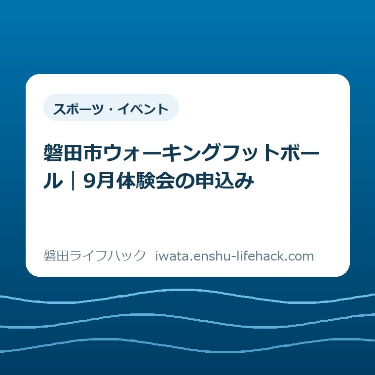

スポーツ・イベント
磐田市ウォーキングフットボール｜9月体験会の申込み

この記事の要点
Q. 走る競技は不安。9月の体験会には、どう申し込めばいい？
A. 2026年9月27日（日）9時30分～正午、磐田市総合体育館小体育場で無料体験会があります。対象はどなたでも、先着20名・要申込。9月25日（金）正午までに市公式ページの「ジュビロ×磐田市」欄から申し込みます。飲み物、運動できる服装、体育館シューズを用意。残枠や個別の参加条件は公式で確認してください。
運動を再開する前に、家族はもう段取りをしている
家族で運動を始めるには、予定の調整、送迎、靴の準備が要ります。仕事や家事の合間に案内を探し、本人の気持ちを聞くところまで、すでに手間を払っているご家庭もあるはずです。参加の可否や必要な配慮は個別条件で変わります。「どなたでも」という対象表記だけで、家族全員に同じ参加方法が合うとは決められません。
走るサッカーにはためらいがあっても、歩いてボールを扱うなら試したい。そんな家族に向け、2026年9月27日の体験参加に必要な準備を整理します。施設を借りて自分たちで練習する案内とは分けて読んでください。
磐田市「ウォーキングフットボール」は、歩いて行うサッカーと説明しています。運動経験や障がいの有無にかかわらず、子どもから高齢者まで楽しむスポーツとして紹介されています。この記事では、競技の細かなルールや体への効果を独自に断定しません。
私は大石浩之（磐田市／不動産業）です。今回は参加した体験談ではなく、公表された条件を家族の段取りに置き換えて考えます。家や暮らしの予定を決めるのと同じで、参加費だけでなく、誰が何を引き受けるかまで見える案内にしたいと思います。
9月27日の開催と、9月25日正午の締切を分けて記録する
磐田市「ウォーキングフットボール」の「ジュビロ×磐田市」欄では、2026年9月27日（日）9時30分から正午までの開催を案内しています。会場は磐田市総合体育館の小体育場です。参加費は無料で、先着20名、申込みが必要です。2026年9月12日に原文を確認しました。
| 項目 | 市の案内 |
|---|---|
| 開催日時 | 2026年9月27日（日）9時30分～正午 |
| 会場 | 磐田市総合体育館 小体育場 |
| 対象・費用 | どなたでも・無料 |
| 定員 | 先着20名・要申込 |
| 申込期限 | 2026年9月25日（金）正午 |
| 申込先 | 市公式ページ「ジュビロ×磐田市」欄のフォーム |
締切は9月25日の夜ではありません。金曜日の正午です。仕事や学校が終わってから入力しようとすると、同じ日でも期限を過ぎます。家族の予定表には開催日だけでなく、「申込みは25日12時まで」と別の予定として残すと、準備する人が迷いません。
先着20名は、20家族という意味ではありません。市の表記は人数です。ただし、家族を一度に登録できるか、参加者ごとの手続きが要るかは今回確認できていません。代表者がフォームを開いただけで家族全員の枠を取れたと考えず、申請画面の案内を確かめてください。
2026年9月12日時点で、市の案内に残枠の記載はありません。締切前だから参加できる、まだ20名空いている、という読み方はできません。申込画面の受付状況を見て、判断できなければ市の担当課に確認する必要があります。
同じ公式ページには、10月3日開催の「ボニータ×磐田市」の案内もあります。9月の申込先を探すときは、ページの下まで進んで別の案内を選ばないよう、開催日と「ジュビロ×磐田市」の見出しをセットで確認してください。

申込フォームは、受信できるメールを用意して開く
9月27日の申込みは、磐田市「ウォーキングフットボール」公式ページの「ジュビロ×磐田市」欄にある申込みフォームから進みます。リンク先はLoGoフォームで、画面の表題は「JFA・キリンウォーキングひろば 9/27」です。市のページ名とフォーム名が異なるため、日付も照合してください。
2026年9月12日にフォームを開くと、ゲストとして進む方法と、ログインして進む方法が表示されました。ゲストの「申請へ進む」を選んだ先はメール認証画面です。受信可能なメールアドレスを登録し、認証する案内を確認しています。
ここで準備しておきたいのは、その場で受信内容を読めるメールです。家族の誰かに操作を頼むなら、入力を担当する人とメールを確認する人が別々になって連絡待ちにならないか、先に確かめておくと手戻りを減らせます。これは申込先が定めた追加条件ではなく、私の段取りの提案です。
今回の調査ではメールアドレスを送信していません。認証後に現れる参加者情報の項目、申請完了の表示、家族をまとめて入力する方法は未確認です。氏名だけで済む、電話番号が必須、という案内をこの記事で補うことはしません。必要事項は実際のフォームの表示に従ってください。
メール認証を終えたことと、体験会への申込みを終えたことは分けて確認してください。手続きを進めたら、画面に示される完了案内や届いた通知の内容を読みます。参加者名や人数を確認できる情報があれば、家族の手元にも残しておくのが私の勧めです。
フォームが進まない場合は、どの画面で止まったかを整理して問い合わせると説明しやすくなります。市のイベントページの情報発信元は、スポーツのまち推進課、電話0538-37-4832です。電話でそのまま申込みを受け付けるとは書かれていないため、問い合わせ先と申込方法を混同しないでください。
家族で参加するなら、本人の希望と必要な配慮を分ける
9月27日の無料体験会は、市の案内で対象を「どなたでも」としています。競技経験のある大人だけを対象にした募集ではありません。一方、子どもの付き添い、見学だけの家族の扱い、休憩の取り方など、個別の参加方法までは公式ページに説明されていません。
家族を誘うときは、「一緒に運動しよう」と結論を先に置くより、「歩いて行う体験会があるけれど、関心はある？」と聞く形がよいと私は考えます。参加したい人と、送迎だけならできる人を分ければ、家族の全員に同じ役割を求めずに済みます。
たとえば、子どもと大人で参加を考える場合も、同じ組で活動できるとは限りません。付き添いの必要性や、見学者を申込人数に含めるかなど、当日の運営に関わることは主催側に確認します。確認していない扱いを、ご家庭の判断だけで決めて人数を省かないようにしてください。
移動や会場内で必要な配慮がある場合は、「参加できますか」だけでなく、何を手伝ってほしいかを伝えると確認が具体的になります。入口から小体育場までの移動、付き添う人の動きなど、心配な場面を一つ挙げる形です。対応をこの記事が保証するものではありません。
私にも、無料の体験会だから気軽に背中を押してよいのか、という迷いがあります。走らない競技という説明だけで、本人の不安が消えるとは思えません。今回は様子を確かめるための参加なのか、運動を始めたいのか。その気持ちを先に聞く余地は残したいです。
持ち物は3項目。体育館シューズを出発前に確かめる
市の9月27日体験会の案内に記載された持ち物は、飲み物、運動ができる服装、運動靴（体育館シューズ）の3項目です。普段履いている屋外の靴だけで出発しないよう、室内用の靴を参加者ごとに確認してください。
「運動靴」という言葉だけを家族に伝えると、外で履く靴でよいと思うかもしれません。公式の案内には括弧で体育館シューズと書かれています。家族への連絡でも括弧の中を省かず、「体育館で使う靴を持っていく」と伝えた方が、持ち直しの手間を減らせます。
靴の貸出があるか、どのような靴が使えるかは、今回のイベント案内では確認できませんでした。家に室内用の靴がない場合は、買い物を先に決めるより、参加の見通しと使用できる靴を確認する順番を私は勧めます。無料という参加費と、家庭で生じる準備費は別だからです。
飲み物は、参加する人が自分のものを分かるように用意します。必要量や給水場所は公式案内に指定がないため、この記事で一律の量は示しません。家族の分を一つの袋にまとめるなら、誰が持って会場へ入るかも決めておくと、車に置いたままにする行き違いを防ぎやすくなります。
服装について市が示しているのは「運動ができる服装」です。ユニフォームの購入や特定のブランドの指定は、この案内にはありません。まず手元の服を確認し、不明な点だけ問い合わせる。道具選びが参加を決める前の大仕事にならないようにしたいところです。

総合体育館に着いた後は、小体育場を目指す
体験会の行き先は、磐田市総合体育館の小体育場です。市のイベント案内は住所を「磐田市見付4075」と記載しています。別の市「施設ガイド 磐田市総合体育館」では「見付4075-1」と表示されているため、地図では施設名も併せて照合してください。
施設ガイドには大体育場、小体育場、武道場、トレーニング室が別に掲載されています。同じ建物の利用でも目的の部屋は一つではありません。待ち合わせを「体育館」とだけ伝えるより、「ウォーキングフットボールの小体育場」と共有した方が、着いてから探す手間を減らせます。
施設ガイドが案内する駐車場は210台で、かぶと塚公園との共用です。これは体験会の参加者専用に210台を確保するという意味ではありません。当日の空き状況や会場入口に近い区画の利用を保証する数字として扱わないでください。
送迎する場合は、正午の終了予定と、迎えに来る人の予定を一緒に確認します。終了時刻は会場での開催枠の終わりであり、自宅に戻れる時刻ではありません。靴の履き替えや合流、帰り道を含めて、昼の家事や用事と重ならないかを見ておくのが私の提案です。
公共交通や駐車場の調べ方を確認したい場合は、当サイトの駐車場・アクセスの確認ガイドも使えます。地図を見る目的は最短経路を選ぶだけではありません。参加する本人が無理なく入口まで移動できるかを、家族で確かめるためです。
良い点——施設を借りる前に、一度試す入口がある
9月27日のウォーキングフットボール体験会は、無料で参加できる機会として市が案内しています。対象はどなたでもとされ、運動経験を問わない競技として紹介されています。自分たちで施設を借りて活動を組み立てる方法とは、準備の入口が異なります。
私は、最初から継続の約束をしなくても、一度の体験を検討できる点を評価します。家族で運動を始める話が、いきなり毎週の予定や道具の購入になると、決めることが増えます。まず9月27日の午前に参加できるかを考えられるのは、予定を調整する側にとって助かる条件です。
もう一つの良い点は、日時、定員、持ち物、申込先が市の一つのページに載っていることです。申込担当の家族から別の家族へ、公式ページをそのまま共有できます。口頭で伝える途中に「正午」や「体育館シューズ」が抜けるのを防ぐ土台になります。
普段使う運動場所も並行して考えたいなら、磐田市のスポーツ施設を目的から選ぶ記事に別の入口を整理しています。ただし、9月27日体験会の申込みを、その施設選びや通常の予約に置き換えることはできません。
注文したい点——家族の申込み方が先に見えると助かる
9月27日体験会の市公式ページには、残枠や家族をまとめて申し込む方法の説明は見当たりません。LoGoフォームはメール認証の先を確認していないため、必要な説明がフォーム内に用意されている可能性はあります。説明が全くないと断定するものではありません。
その上で、私は市の案内を読む一市民として、家族参加の入力単位が認証前に分かると助かると考えます。「一人ずつ申し込むのか」「付き添いはどう数えるのか」が先に分かれば、誰の情報を準備するかを家で決められます。入力を始めてから家族に聞き直す手間が減ります。
残枠の数字を常時掲載するには、更新の作業が要るはずです。私は、その負担を無視して細かな数字の公開を求めたいわけではありません。受付中か、終了したか、問い合わせが必要かが分かる表示なら、申し込む側にも案内する側にも行き違いを減らす助けになると思います。
見学や付き添いの扱いについても、よく聞かれる条件があれば案内ページに一文あると家族は判断しやすくなります。担当者への批判ではなく、参加する本人以外も段取りを担っているという視点からの注文です。分からない部分は、利用者が推測で埋めずに確認できる形がよいと考えます。
対案・結論——今日の一歩は、公式の申込入口を家族で確認する
9月27日の体験参加を考える家族が今日できる一歩は、市公式ページの「ジュビロ×磐田市」欄を一緒に開くことです。締切は9月25日正午、開催は9月27日9時30分から正午。二つの日付を見ながら、申込手続きを担当する人を決めてください。
申込みを進めると決めたら、受信できるメールを手元に置き、フォームに進みます。家族参加の入力方法で迷った箇所があれば、その点を確認してから人数を登録してください。画面の完了案内まで確かめた後に、持ち物や送迎の予定を共有する順番を私は勧めます。
家族に残すメモは、長い説明文でなくて構いません。参加する人、申込手続きをした人、完了を確認できる情報、持ち物を用意する人、帰りの予定。この五つが分かれば、当日までに別の家族が引き継ぐ場面でも、最初から案内を読み直さずに確認できます。
予定が合わず9月27日に参加しない場合も、運動再開の話そのものを終わりにする必要はありません。別の活動を探すなら、遊ぶ・使う・出かけるの案内から、家族の予定に合う施設や過ごし方を考えられます。今回の先着枠を理由に、本人が望まない参加を決めることは避けたいです。
大石の視点——無料だけでは、家族は動けない
私は、運動を始める家族の負担を、参加費だけで数えない方がよいと考えます。無料だけでは家族は動けない。誰が申し込み、靴をそろえ、帰りを引き受けるかまで決めて、ようやく参加の入口になる。立派な募集案内も、使う人が動ける段取りに変わって初めて暮らしの役に立ちます。
今回の記事で一番残したいのは、参加を急がせる言葉ではありません。家族がすでに払っている調整の手間を、一つ減らすことです。受信できるメールを準備する、体育館シューズを確かめる、小体育場と伝える。判断を支える具体的な作業にすると、参加する人も支える人も次の動きを選べます。
本記事は磐田市の公式案内ではなく、公表情報と私の意見を分けた読み物です。開催内容、受付状況、個別の参加条件は変更される場合があります。参加を決める前の最後の確認は、必ず磐田市「ウォーキングフットボール」の公式ページで行ってください。
よくある質問
申込期限と申込方法は？
2026年9月27日（日）の体験会は、9月25日（金）正午が申込期限です。市公式ページの「ジュビロ×磐田市」欄からフォームへ進みます。ゲスト申請でもメール認証画面がありました。先着20名ですが残枠は未確認です。認証だけで止めず、申請の完了案内まで確認してください。
子どもや運動未経験の家族も参加できる？
磐田市の9月27日体験会は、対象を「どなたでも」としています。市は運動経験を問わず楽しむスポーツとして紹介しています。ただし、子どもの付き添い、見学者の扱い、家族一括申込みの可否は未確認です。家族の事情や必要な配慮を伝え、市の案内と申込フォームで個別に確認してください。
通常の体育館予約や利用料金も必要？
9月27日のウォーキングフットボール体験会は無料・要申込です。市公式ページのイベント用フォームを使います。施設を通常利用する場合の予約や料金とは別の案内です。総合体育館を自分で予約すれば体験会に参加できる、とは考えないでください。持ち物や受付状況は市公式ページで確認してください。
参考にした公式情報
- ウォーキングフットボール／磐田市（2026年8月25日更新、2026年9月12日確認）
- 施設ガイド 磐田市総合体育館／磐田市（2026年8月19日更新、2026年9月12日確認）

最終確認日：2026-09-12 ／ 本記事は公表情報と執筆者の見解を分けて記載しています。制度・数値・公開状況は変更される場合があるため、最新情報は磐田市公式ページでご確認ください。